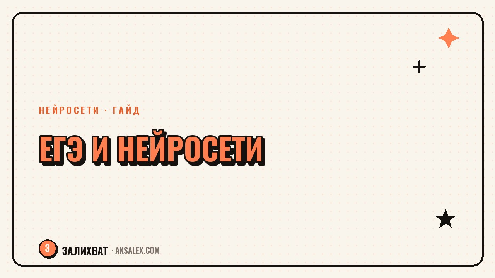

Нейросети для подготовки к ЕГЭ и ОГЭ без репетитора

Репетитор по каждому предмету - это десятки тысяч рублей в месяц, и не у каждой семьи есть такая возможность. Нейросеть не заменит педагога полностью, но закрывает рутину: объясняет тему другими словами, прогоняет через десятки заданий и находит слабые места в сочинении за минуту. Разберём, как выстроить подготовку к ЕГЭ и ОГЭ с ИИ так, чтобы она поднимала баллы, а не создавала иллюзию занятости.
Что нейросеть умеет в подготовке к экзаменам, а что нет
Нейросеть держит в голове всю школьную программу сразу и объясняет теорему Виета, закон Ома и деепричастный оборот разными словами, пока не станет понятно. Это экономит время по сравнению с поиском по учебникам и форумам.
Слабое место - фактическая точность в деталях и незнание актуальной демоверсии текущего года. Формат заданий и критерии стоит сверять с демоверсией ФИПИ, а не доверять ИИ вслепую.
Где ИИ выигрывает у зубрёжки
- Объясняет тему заново другими словами, если первое объяснение не зашло
- Генерирует сколько угодно похожих заданий для тренировки одного навыка
- Показывает, на каком шаге решения ошибка, а не только итоговый ответ
Как разобрать сложную тему, когда учебник не помогает
Частый сценарий - ребёнок открыл параграф, прочитал два раза и не понял ничего. Вместо третьего прочтения стоит попросить нейросеть объяснить тему через аналогию из жизни: как работает осмос - через губку и воду, как считать вероятность - через кубики и карты. Такой разбор откладывается в памяти лучше, чем сухая формулировка из учебника.
Пошаговый разбор темы с ИИ
- Сформулировать, что конкретно непонятно, а не «не понимаю тему»
- Попросить объяснение через аналогию и пример из жизни
- Решить задание самостоятельно, затем попросить проверить ход мысли
- Записать итог в конспект своими словами, не копируя текст ИИ
Тренажёр заданий и работа над ошибками
ЕГЭ и ОГЭ - вопрос натренированности на типовые форматы заданий, а не только знаний. Нейросеть можно попросить сгенерировать десять заданий второй части по конкретной теме, например «неравенства с параметром». Это закрывает проблему, когда в учебнике на тему всего два примера.
Полезная привычка - вести журнал ошибок: после каждой тренировки фиксировать, на каком типе заданий спотыкаешься чаще, и просить у нейросети именно такие задания дальше.
Балл на экзамене даёт не количество прочитанных параграфов, а количество разобранных ошибок. Нейросеть ускоряет именно второй процесс.
Сочинение и изложение: как получить честную обратную связь
Для русского языка нейросеть полезна как первый проверяющий. Загружаешь черновик сочинения и просишь оценить по критериям ЕГЭ: есть ли тезис, аргументация, логика переходов, ошибки в речи. Приходишь к учителю уже с исправленной версией.
Важно не просить нейросеть написать сочинение целиком - на экзамене такой текст писать будет уже не она. Правильный формат: ты пишешь сам, ИИ разбирает структуру и указывает на слабые места. Дальше переписываешь сам, с учётом замечаний.
- Соответствие теме и чёткий тезис в первом абзаце
- Орфографические и пунктуационные ошибки с объяснением правила
- Повторы слов и канцелярит, которые снижают оценку
Какую нейросеть выбрать для подготовки
Для школьной подготовки не нужен самый дорогой тариф флагманской модели - важнее доступность на русском и готовность объяснять по шагам.
| Сервис | Для чего подходит | Особенность |
|---|---|---|
| Бесплатные нейросети на русском | Теория, задания, проверка сочинений | Без VPN, хватает для большинства задач |
| Платные подписки на флагманские модели | Сложные задачи по физике и математике | Точнее, но не обязательны при среднем уровне |
| Образовательные боты | Банки заданий ЕГЭ/ОГЭ с проверкой | Удобны, но не всегда бесплатны |
| Голосовые ассистенты | Быстрый вопрос-ответ на ходу | Хуже держат контекст темы |
На практике удобнее завести один основной инструмент и держать второй под рукой на случай сбоя. Вычисления в точных науках стоит перепроверять вручную - ИИ иногда ошибается в арифметике на длинных цепочках.
Типичные ошибки при подготовке с ИИ
Главная ловушка - подменить мышление копированием. Если ученик только переписывает готовый ответ без понимания хода решения, на экзамене без подсказки повторить это не получится. Вторая ошибка - доверять формату и критериям без проверки по демоверсии текущего года.
- Не копировать решение без понимания - проси объяснить ход мысли
- Сверяй формат и критерии с демоверсией ФИПИ
- Начинай системную подготовку заранее, а не в последний месяц
Частые вопросы
Может ли нейросеть полностью заменить репетитора перед ЕГЭ?
Полностью - нет, особенно если нужна мотивация и контроль со стороны. Но закрыть рутину вроде разбора теории и проверки сочинений нейросеть вполне способна.
Какая нейросеть лучше для подготовки к ОГЭ по русскому языку
Подходит любая доступная на русском текстовая нейросеть без VPN. Важнее привычка формулировать точные запросы и проверять ответы по учебнику.
Можно ли доверять нейросети в решении задач по математике
Ход решения и логику - можно, а вычисления в длинных примерах стоит перепроверять самостоятельно. Нейросети иногда ошибаются в арифметике на длинных цепочках.
С какого класса стоит использовать нейросети для подготовки к экзаменам
Разбор теории и тренировку заданий можно начинать с 8-9 класса, когда уже идёт подготовка к ОГЭ или ЕГЭ. Раньше программа не требует такой тренировки.
Как проверить, что нейросеть не ошиблась в критериях оценивания сочинения
Сверь ответ с демоверсией и критериями на сайте ФИПИ за текущий год. Модель может называть устаревшие критерии, поэтому проверку формата всегда делай по официальному документу.
Раз тема оказалась полезной, вот что почитать следующим. Как рассказывать о своём деле так, чтобы люди запоминали и хотели узнать больше.
Читать статью →а не вручную